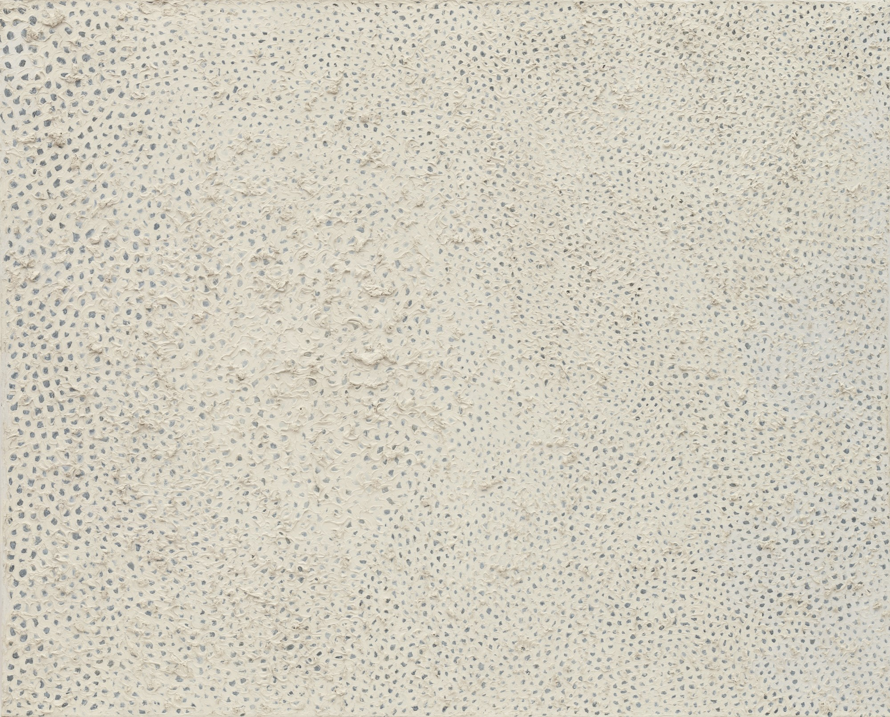
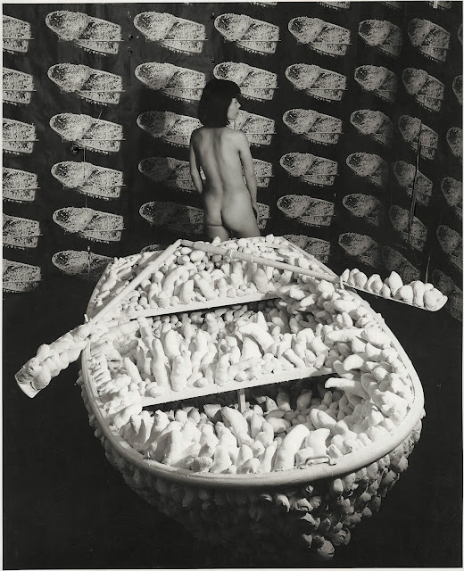
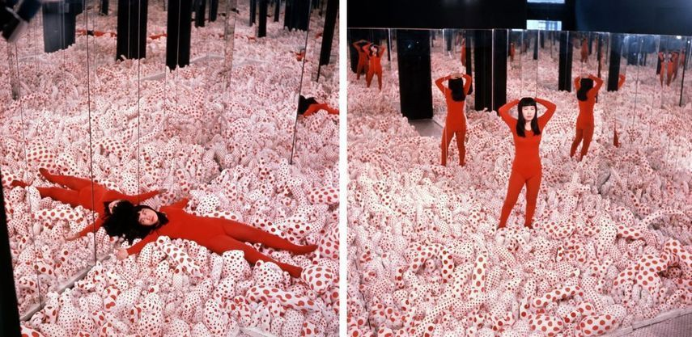

MODERN ART RESEARCH PAPER
The endless procession lining Manhattan streets in anticipation for a fleeting glimpse of Yayoi Kusama's dazzling work would have come as no surprise to the David Zwirner Gallery when hosting the famed Infinity Mirror Rooms exhibition. A previous Kusama show, displayed at the Smithsonian's Hirshhorn Museum and Sculpture Garden, ushered in a record breaking 475,000 visitor count in 2017. With the hashtag #InfiniteKusama reaching 330 million impressions, Kusama's stardom and popularity, eponymous to the staggering intensity of a tidal wave or that of a soaring meteor, had -at long last- taken the world by storm. Dubbed as the "World's Most Famous Artist" in 2014 and subsequently named as one of the "Most Influential People" in 2016, it seems inconceivable to imagine a world that hasn't seen Kusama's trademark dots splashed across seemingly infinite canvases.
Kusama's star, suppressed by the loud eclipse of oversized hamburgers àla Oldenburg and printed walls of Campbell Soup, was not readily apparent to the gatekeepers of the art world upon her emergence in New York City. In an overwhelmingly white patriarchal art establishment, it was a nearly impossible feat for a female immigrant with mental illness to be welcomed to the postwar art world, let alone make a living. "She was twice the other," said Glenn Scott Wright, director of the Victoria Miro Gallery. "Not only was she a woman in a male dominated art world, but she was also Japanese. She was not taken seriously by the establishment."
Not only was she a woman in a male dominated art world, but she was also Japanese. She was not taken seriously by the establishment.
Drawing and painting every day upon her arrival, Kusama was determined to create a new history of art in the United States through her personal perspective of the world. Haunted with psychosis and obsessional neuroses since childhood, Kusama's early work showcased her uncanny ability to translate these afflictions into visual works. With self described "visual and aural hallucinations" manifesting as mesmerizingly painted repetitive nets that broke beyond the boundaries of the expansive canvases, her trademark Infinity Nets came to life. Persistent against countless refusals from countless galleries and dealers, Kusama would boldly approach wealthy patrons and influential figures to further her career, doing "everything there was to get ahead" (Wright). Kusama's ambition would prove to be far greater than any fear of rejection, keenly acknowledging the cache surrounding her position as an enigmatic figure seeking liberation from the strict traditional confines of the Japanese art world. Lynn Zelevansky, former curator at LACMA described, "She's wearing current fashions and then she starts wearing kimonos for special occasions. There's a lot of mystery and allure to being an Asian female. She's trying to survive in this world."

No. F, Yayoi Kusama, 1959.
Brata, a co-op formed by artists frustrated with the lack of inclusion in prestigious galleries, gave Kusama her first solo show, Obsessional Monochrome, for the Infinity Nets series in October 1959. During this time of celebration for Abstract Expressionists, Kusama's works expressed a certain individualistic approach with delicately intricate patterns containing highly tactile textures. Infinity Nets presented as a visual breakthrough in the highly celebrated period of Abstract Expressionists. With dichromatic abstract compositions, a viewer can quickly interpret a feeling of peace and respite from afar- evoking a sense of light and air- a quality that was missing in the brash action paintings that were popular at the time. Upon closer study, there is a compelling contrast in the intensity of each detailed brushstroke that mirrors the nature of Kusama's manic obsessive energy, sharply diverging from the tranquil impression her work initially evokes at first glance.
"My desire was to predict and measure the infinity of the unbounded universe, from my own position init, with dots - an accumulation of particles forming the negative spaces in the net. How deep as the mystery? Did infinite infinites exist beyond our universe?"" Kusama said of her exhibition. The ability to seamlessly move between the contradictory fields of disorder vs. calm, infinitesimal vs. abyss, palpable vs. intangible, and dizzying vs.orderly is indicative of her capability of translating and transforming her unique examination of the world.
Donald Judd, artist and well respected critic, wrote of her show, "Yayoi Kusama is an original painter. The five white, very large paintings in this show are strong, advanced in concept and realized. The effect is both complex and simple. The expression transcends the question of whether it is Oriental or American. Although it is something of both, certainly of such Americans as Rothko, Still and Newman, it is not at all a synthesis and is thoroughly independent." Even with many reviews echoing similar adulation, Kusama was subsequently identified and classified as a Japanese woman practicing art in Western society. Author and critic Dore Ashton praised Kusama as a "prodigy of patience" while pondering "dare I say Oriental patience since Miss Kusama was born and trained in Japan?" Another unsigned statement for a Boston publication wrote "I could not help but think that her style expresses obliquely and delicately the sense of the void so germane to Buddhistic thought." In reality, Kusama had no involvement with Buddhism practices nor was she conscious of any 'Oriental' cultural influence in creating her works. Subjugated to the very place that ostracized her, Kusama's initial accomplishments remained obscured by an audience preoccupied with stereotypes.
Yayoi Kusama is an original painter. The five white, very large paintings in this show are strong, advanced in concept and realized. The effect is both complex and simple. The expression transcends the question of whether it is Oriental or American. Although it is something of both, certainly of such Americans as Rothko, Still and Newman, it is not at all a synthesis and is thoroughly independent.
This bias was further perpetuated in Kusama's arduous battle for recognition while contemporaries received enthusiastic accolades for her original creations. In 1962, against all odds, Kusama's contribution, Accumulation No. 1, won the spotlight in a highly anticipated group show that included Claes Oldenburg, alongside some of the other biggest names of the art world. By sewing and stuffing phallic protrusions to cover an otherwise ordinary domestic armchair as a sculpture to portray contemporary issues, Kusama's creation highlighted her perceptive awareness of the direction that art and cultural movements were headed towards. Her whimsically satirical transformation of everyday objects to portray contemporary topics surrounding sexuality and gender in conjunction to her highly personal narrative would have otherwise marked her as a trailblazer of the Pop Art movement had the piece not been relegated as a mere object of shock value. Kusama's achievement was later overshadowed by Oldenburg's subsequent solo exhibition months later, featuring all soft sculpture- a significant departure from his characteristic papier-mache works. Even today, Oldenburg is credited as the first to create sculpture during the Pop period.
Similarly, Andy Warhol, after attending Kusama's Aggregation: One Thousand Boats exhibition where she papered the entire room with reproduced images of her sculpture, later debuted his Cow Wallpaper installation- a room tiled with repeated photos of a cow. Repetition and patterns, a quintessential Kusama method that can be traced since the 50s, was once again obscured and appropriated by Warhol, with art history delegating this technique as his trademark. Although largely overlooked, Kusama's innovative approach in the One Thousand Boats exhibition reveals her incredible capacity to anticipate the advantageous importance of sculpting an all encompassing environment and cultivating an artistic persona. Her first installation, featuring a rowboat covered with a thousand stuffed fabrics in various phallic shapes and 999 pictures of the aforementioned object, was a strikingly stirring scene. Commissioning famous Swiss-American photographer Rudy Burckhardt, Kusama deliberately directed him to compose her first nude image in her phallic surroundings. In controlling her own image, Kusama consciously went through a pivotal metamorphoses from artist to art object, entrenching her identity with her practice.

Kusama posing in Aggregation: One Thousand Boats Show 1963.
With this as a turning point, Kusama set forth in expanding her usage of space and multi-dimensions. And thus, in November 1965, Kusama's first mirror room Infinity Mirror Room - Phalli's Field was fully realized at the Castellane Gallery. With mirror covered walls and thousands of red polka dotted canvas phallic forms emerging from the surface, people could walk through what seemed to be an infinite field of patterned phalluses. Kusama invited visitors to "walk barefoot through a phallus meadow, becoming one with the work and experience their own figures and movements as part of the sculpture," describing the exhibition as "wandering into this infinite wonderland, where a grandiose aggregation of human sexual symbols had been transformed into a humorous, polka-dotted field, viewers found themselves spellbound by the imagination as it exorcised sexual sickness in the naked light of day."

Infinity Mirror Room—Phalli's Field, Yayoi Kusama, 1965.
Kusama was able to stage the viewer with theatrical effect, presenting them as an additional piece of her artwork. Her mirror, representing a literal object of narcissism or vanity, provokes commentary on the role of the viewer as both a participant and voyeur. Though embedding numerous meanings in a singular work, she flips back to her endless voyage in discovering infinity. As with her Infinity Nets, Kusama’s Infinity Mirror Room evokes a strong sense of dichotomy in both the proliferation and emptiness of that the mirror imagery summons. Continuing these themes in her Narcissus Garden work, Kusama appeared uninvited at the Venice Biennale in 1966. Peddling 1500 mirror orbs on the Italian pavilion for $2 a piece in a kimono and red leotard, Kusama's oeuvre had developed into public performance art. This evolution was described by art historian Jody Cutler as a "dialogue with the psychological state known as narcissism," with "narcissism is both the subject and the cause of Kusama's art, or in other words, a conscious artistic element related to content."
Narcissism is both the subject and the cause of Kusama's art, or in other words, a conscious artistic element related to content.
Kusama's performative activities were largely criticized by critics and dismissed as a "gross lust for publicity". While peers like Warhol were celebrated for their outlandish public personas, Kusama’s status as an outsider largely undermined her avant-garde achievements. As an ethnic female artist, Kusama faced the prevailing prejudices of those who would dismiss her regardless of the advancements she made in the art world. As prolific and innovatory as any of her male counterparts, Kusama’s work revolving around sociopolitical issues was largely undermined as reviewers dissolved these efforts dubbing her patronizingly as "little Kusama" and "diminutive Japanese girl with long black hair, pretty enough to decorate any environment", effectively silencing her efforts.
Fighting a lifetime of inequality, Kusama relentlessly continued on to achieve the very status of her longtime muse: Infinity. Kusama's sensational resurgence, after a decades long battle with abject disregard and rejection, had finally cemented her legacy as one of the most prominent artists of all time. Whereas esteemed peers set to work reflecting the impact of a modern world in the throes of commercialism, Kusama advanced her practice with a prescient persistence towards the critical importance of utilizing publicity and celebrity as a practice. Breaking the boundary of artworks trapped in the establishment of steely museum institutions and brightly lit gallery walls, the reach of Kusama's work and larger than life persona have set the precedent as not only one of the most influential artists of all time, but a true encapsulation of popular culture.